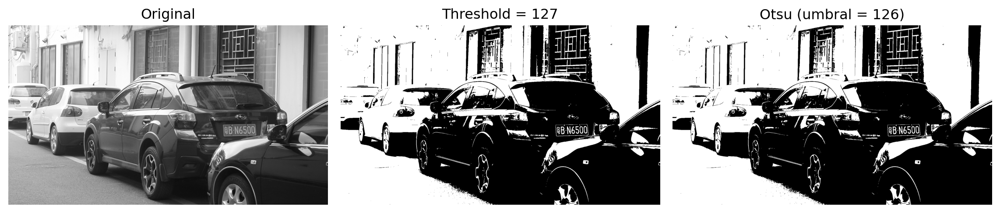

Code
import cv2
import matplotlib.pyplot as plt
import numpy as np
# Cargar imagen
img = cv2.imread("imagenes/DPP0357.TIF", cv2.IMREAD_GRAYSCALE)
# Threshold simple (manual)
_, binary_simple = cv2.threshold(img, 127, 255, cv2.THRESH_BINARY)
# Threshold de Otsu (automático)
umbral_otsu, binary_otsu = cv2.threshold(img, 0, 255,
cv2.THRESH_BINARY + cv2.THRESH_OTSU)
# Visualización
plt.figure(figsize=(12,4))
plt.subplot(1,3,1)
plt.imshow(img, cmap='gray')
plt.title('Original')
plt.axis('off')
plt.subplot(1,3,2)
plt.imshow(binary_simple, cmap='gray')
plt.title('Threshold = 127')
plt.axis('off')
plt.subplot(1,3,3)
plt.imshow(binary_otsu, cmap='gray')
plt.title(f'Otsu (umbral = {umbral_otsu:.0f})')
plt.axis('off')
plt.tight_layout()
plt.show()